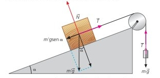

rg-Dado el sistema de la figura, teniendo en
cuenta que m=3kg y m’ (masa que pende verticalmente
de la polea) tiene un valor de 2kg. El ángulo del plano
inclinado es 30o y el coeficiente de
rozamiento tiene un valor de 0,23. Calcula la aceleración con la
que se mueve el sistema
